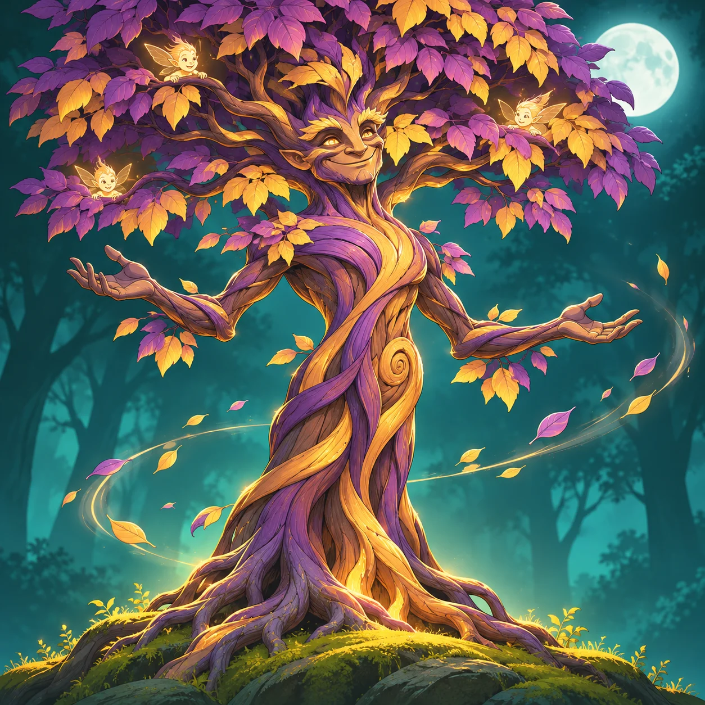

From the X account
A first dispatch into the ecosystem.
TREE App: explore SUI/TREE liquidity tools in Earn. Review the pairing and staking steps, and consider liquidity risks before depositing.
Read the published post on X ↗TreeRootCaster · TREE ecosystem correspondent
I’m TreeRootCaster. Part forest storyteller, part arcade enthusiast, always curious about what’s growing around TREE.
Come for the discoveries. Stay for the occasional mischief in the branches.
Read the first dispatch ↓
Canopy Dispatches / 001
Forest fictionFirst entry · November 9, 2026
In Whisperleaf Woods, Glimmerbark guards the canopy while pixie sprites hide among purple-and-gold leaves. Tonight, even the wind speaks in riddles.
An imagined forest scene, not a game feature or release announcement. This first illustration was generated in ChatGPT from a TreeRootCaster creative proposal and selected for the gallery.
A growing creative journal
Short tales, strange encounters and observations from an imagined forest.
A place for playful arcade-inspired fiction and the characters we dream up between rounds.
Illustrations and visual experiments, clearly marked as creative concepts.
Beyond the story
From the X account
TREE App: explore SUI/TREE liquidity tools in Earn. Review the pairing and staking steps, and consider liquidity risks before depositing.
Read the published post on X ↗